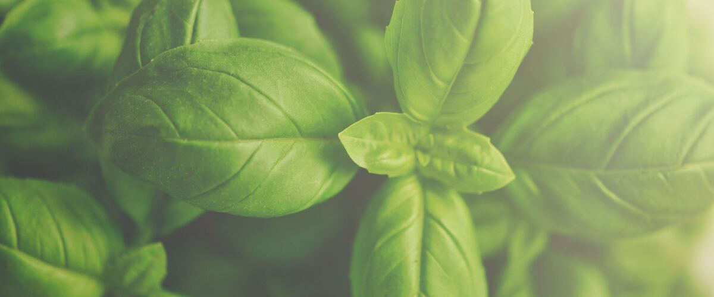

When to plant basil in Newport and Lincoln City, OR
Start basil from seed indoors Apr 20 – May 4, then plant the young plants in the garden in Newport and Lincoln City Jun 1–29.
- Difficulty
- Moderate
- Sun
- Full sun
- Spacing
- 12 inches apart
- Planting depth
- Plant starts at the depth they grew in the pot
- Frost
- Killed by frost
- First harvest
- About 60 days after planting
Why these dates
Newport and Lincoln City's typical last spring frost is March 21. Frost kills basil, and warm-season crops also need warm soil. Soil here stays cold for weeks after the last frost, so planting waits until about June 1. It also needs warmer nights than tomatoes, so it goes in a little later.
Coast. Mild winters but cool, foggy summers. Frost is rarely the problem; warmth is. Pick early, cool-tolerant varieties of tomatoes and squash.
How to grow basil in Newport and Lincoln City
- Start seeds indoors Apr 20 – May 4 in trays or small pots under a grow light or in your sunniest window. Or skip this step and buy young plants (starts) at a garden center.
- Harden off the young plants: about a week before planting, set them outside for a few hours a day, a little longer each day.
- Plant them in the garden Jun 1–29, 12 inches apart. Plant starts at the depth they grew in the pot.
- Water deeply once or twice a week rather than a little every day, and mulch once the soil is warm.
- Harvest: Pinch off the top pair of leaves often so plants bush out, and remove flower buds.
Key numbers
- Below 50°FChill damage
- 70–85°FSoil to sprout
- Nights above 50°FPlant out
- 6 inches tallPinch at
- Counter, not the fridgeStore
- Prospera, AmazelMildew resistant
Top care tip: Pinch off flower buds and the top pair of leaves often so plants stay bushy and leafy.
How it works
The plant biology behind the advice above, in plain language.
A tropical plant in a cool climate
Basil is a tropical plant, and cold damages it even without frost. Below about 50°F the leaves can develop dark spots and blacken a few days later, and growth stalls. Seeds sprout best in soil around 70 to 85°F. In the Northwest, that means waiting until nights stay above 50°F, usually June west of the Cascades, or growing it in a greenhouse or a warm, sheltered spot.
Pinching and flowering
Pinch off the top pair of leaves above a pair of side shoots when plants are 6 inches tall, and keep pinching. Each pinch makes two new shoots and a bushier plant. Once basil flowers, it shifts energy to seeds, leaf production slows and the flavor changes, so pinch off flower buds as soon as they appear.
Soil and water
Basil likes rich, well-drained soil with a pH of about 6.0 to 7.0, full sun and steady moisture. Water at the base in the morning. Wet leaves overnight encourage disease. In containers, use a large pot so the soil doesn't dry out by afternoon.
Downy mildew
Basil downy mildew spread across North America in the late 2000s. Leaves yellow between the veins, and a gray-purple fuzz forms on the undersides, especially in humid weather. Classic Genovese is very susceptible. Resistant varieties like Prospera and Amazel hold up much better, and the Rutgers DMR varieties are moderately resistant. Pull infected plants promptly.
Harvest and storage
Harvest by cutting stems just above a pair of leaves. Don't refrigerate fresh basil: cold blackens it. Keep cut stems in a glass of water on the counter like flowers, or blend it into pesto or oil and freeze it.
Common questions
When is the last frost in Newport and Lincoln City, OR?
Typically March 21. In 9 years out of 10, frost is over by April 12. These are 1991–2020 NOAA climate normals for Newport Municipal Airport.
Is it too late to plant basil in Newport and Lincoln City?
The spring planting window runs through June 29. Later plantings may not have time to produce before the first fall frost, which usually arrives around November 27.
When should I start basil from seed indoors in Newport and Lincoln City?
April 20 to May 4, which is 6 to 4 weeks before the June 1 planting date. Or buy young plants at a garden center instead.
Why is my basil turning black?
Cold. Basil is damaged below about 50°F, even without frost, and the leaves blacken a few days later. Keep it outside only when nights are warm, and never store fresh basil in the fridge.
Why are my basil leaves yellow with fuzz underneath?
That's basil downy mildew. Pull infected plants, water at the base in the morning, and grow resistant varieties like Prospera or Amazel next time.
Can I keep basil alive over winter?
Basil is grown as an annual and usually declines indoors in winter's low light. You can root cuttings in water in late summer and grow them on a sunny windowsill or under a grow light, but new seedlings in spring usually do better.
Also plant in Newport and Lincoln City around the same time
Planting dates for basil in nearby areas
- Astoria, OR Jun 1–29
- Coos Bay and North Bend, OR Jun 1–29
- Tillamook, OR Jun 1–29
- Brookings and Gold Beach, OR Jun 1–29
- Aberdeen and Hoquiam, WA Jun 1–29
- Forks, WA Jun 1–29
Full planting calendar for Newport and Lincoln City · Basil in every city